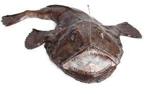

Habitad

Por su aspecto, también recibe el nombre de Pez sapo o pejesapo. Pixín es el nombre con que se conoce el rape en Asturias. Hay más de 200 especies de rape. La mayoría vive en las tenebrosas profundidades de los océanos Atlántico y Antártico, hasta 1.500 metros por debajo de la superficie, aunque algunas especies habitan lugares tropicales poco profundos
Caracteristicas
Tiene cabeza y boca grandes en relación con el cuerpo que es de forma cónica y más cilíndrico hacia la cola.
- Las aletas le salen de una especie de muñones móviles, que le sirven para arrastrarse por el suelo.
- Rape es el nombre común que hace referencia a unos 265 peces marinos emparentados que pertenecen a la familia de los Lófidos, orden Lofiformes
- Las especies más frecuentes son el rape común o blanco y el rape rojizo
- Este pescado también es conocido con el nombre de sapo o pejesapo.
menú